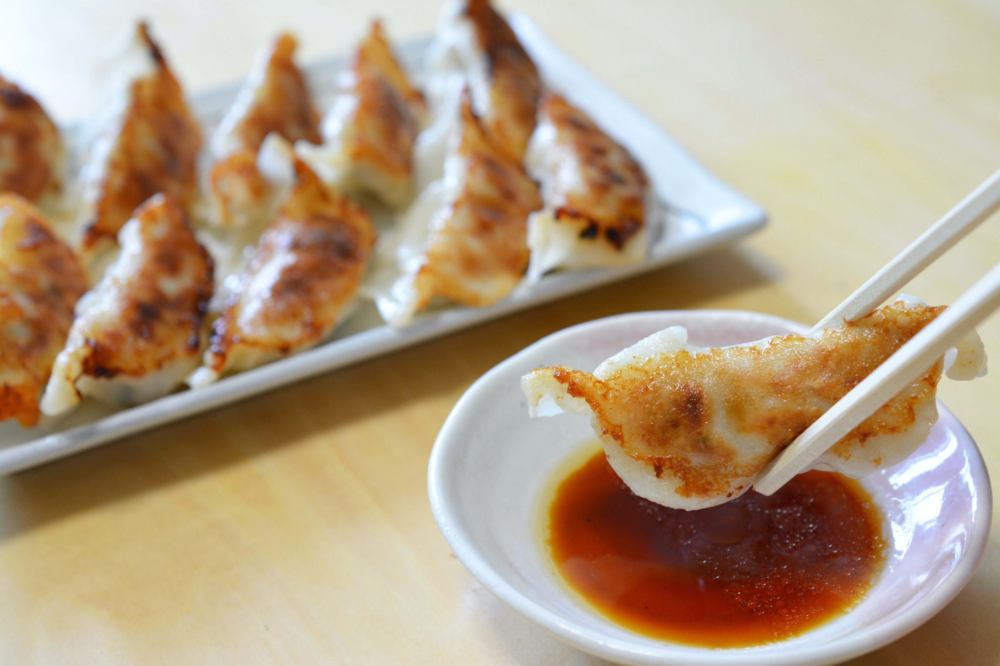

とても美味い！餃子の作り方！
出来上がった美味しそうな焼き立ての餃子を特製の餃子のタレにつけて白ご飯と一緒にいただきましょう！
材料（2人分）
- 餃子の皮
- 25〜35枚
- 豚ひき肉
- 125g
- キャベツまたは白菜
- 300g
- ニラ
- 1/3束
- 生姜のみじん切り
- 10g
(小さじ2)
- サラダ油やごま油などの植物油
- 適量
- 醤油
- 大さじ1
- 酒
- 大さじ1
- おろしにんにく
- チューブで1cm分
- 砂糖
- 小さじ2
- ごま油
- 小さじ２
- 味噌
- 小さじ1
- 塩
- 小さじ1/3
- こしょう
- 少々
- 酢(餃子のタレ用)
- 大さじ2
- 醤油(餃子のタレ用)
- お好みで大さじ1か1/2
餃子のレシピ/作り方
下ごしらえ
- まずは下ごしらえとして、豚ひき肉125gにキャベツ(または白菜)300gを合わせるバランスで十分食べ応えのある餃子に仕上がります。キャベツか白菜どちらでも美味しく作れるので用意しやすい方かお好きな方でお試しください。
- キャベツは汚れた外の葉と芯を取り除き、白菜なら根元の土を洗います。そして、端から少し太めの千切りしてその後90度回転させて同じくらいの幅に切っていきます。大体4〜5mmくらいを意識すると良いと思います。
- この際、大きいものが混ざっていた場合にはもう一度俎板の上に広げてさらに均一にするように細かく切っていきます。餃子を食べる際に野菜感が欲しい方は少し粗めに切ると良いかもしれないです。
- 切ったキャベツ(白菜)はざるに入れてさっと流水で洗います。しっかりと水気を切り300gの野菜に対して塩小さじ1を加えます。箸で底から混ぜるようにして塩を行き渡らせて10分置き野菜に塩をなじませます。
- その10分を待っている間に他の準備もしていきます。ニラを1/3束を2mmほどに切り、生姜は皮をむいてみじん切りにします。みじん切りはかなり細かくて大丈夫です。普段のストレスを晴らすべく細かくしていきましょう。
- そして、塩がなじんだらキャベツ(白菜)の水気を両手で絞り余分な水分を出した状態で餃子のたねの一員として加えてあげます。
- ちなみに餃子のたねには次の工程でにんにくも加えるのですが、生のにんにくを使用したい場合にはすりおろすか、生姜と一緒にみじん切りにしてください。一つ注意点があり、生姜はすりおろしてしまうと全体的に生姜味になってしまうので微塵切りにしておくのがおすすめです。
- ボウルにひき肉を入れてAの調味料等(にんにくチューブ1㎝ほど、醤油と酒各大さじ1、砂糖とごま油各小さじ2、味噌小さじ1、塩小さじ1/3、こしょう少々)を加えます。そして、手でしっかりと混ぜ合わせ、たねに粘り気が出るまでかき回すようにしてひき肉と調味料をなじませます。
- 続けてニラ、生姜、絞ったキャベツ(白菜)を全量加えて全体を手で混ぜ合わせます。野菜を均一に混ざることができれば、餃子のたねの出来上がりです！
- これは好みですが、餃子のタネは1時間くらい冷蔵庫で寝かせても脂が固まるし、調味料もなじんできます。ただ、時間のないときは手についたタネを取って手を洗い、そのまま次の包む工程に移っても大丈夫です！
- 餃子を包む前に皮に付ける水を用意し、餃子の皮は袋からすべて出さず、1枚ずつ取り出せるように封を開けておきましょう。皮が乾いたら包みづらくなるので要注意ですよ！
- 餃子のタネの包み方は、まず皮を手に持ち皮の中央にたねを平らにのばすようにします。
- たくさんたねをのせるよりも、平らにするとたっぷり包みやすい上に余分な空気が入りにくくなります。たっぷり中央に広げたら、皮の淵に水をさっと塗ります。
- 平らに伸ばしたたねごと半分に折り端からひだを作りながら包んでいきます。よく見るやつですね！
- はじめのスタート地点の皮をしっかりつまんで密着させ、それから右手の親指と人差し指でひだを作り、できたひだは左手の親指でしっかり押さえて密着させる、これを繰り返していきます。
- タネがたっぷり入っていると包みはじめはやりやすくても、包み終わりでタネが飛び出てしまうことがあるので注意しましょう。皮の中央にタネを広げるといっても、若干包み始める側にタネが多いくらいにするとやりやすくなります。
- 最後の包み終わりもしっかりつまんで皮同士を密着させることが大切です。気を抜かないでくださいね！
- 包んだ餃子の皮も乾かないように蓋やラップをして1個ずつ包んでください。（このレシピ分量で、普通サイズの皮30～35個、大判サイズの皮25～30個が目安となるのでおおよそ等分でタネを分けると良いですよ。）
- 餃子を焼くときはテフロン加工のフライパンであれば、火にかける前に餃子を並べて大丈夫です。鉄フライパンの場合は軽く火にかけて油をなじませてからにしてください。
- 直線状でも円を描くように放射線状に並べても大丈夫です。そこはお好みで正直なんでも良いです。とりあえず並べ終えたら中火にかけます。
- フライパンの底から小さい音が聞こえはじめたら、そこから1分ほどそのまま焼きます。同時に熱湯75～100mlも用意しておきます。
- 1分後に熱湯をまわしかけ、弱火にしてすぐ蓋をして、そこから5分蒸し焼きします。このとき、熱湯はまとめて一気に焼く場合は100ml、半量くらいで焼く場合は75mlほど加えてください。
- 5分後に蓋を外します。お湯が残っていれば少し火を強めて水分を飛ばすことを忘れないようにしましょう。
- 水がなくなればパチパチと音が変わってくるので、そうなれば油大さじ1/2ほどを淵からまわし入れます。ここから焼き色をつけていきます。
- 油の種類はお好みですが、米油や菜種油などの植物油を大さじ1/2、そこにごま油をほんの少々加えるのがおすすめです！風味が広がって美味しいですよ！
- 水気がない状態で中火くらいの火加減で皮をしっかりと焼き、焼き色をつけます。心配な場合はヘラで返して焼き色を見てみたら良いと思います。
- 焼き色がこんがりついていれば、ヘラで取り出し、お皿に盛り付けます。美味しそうですね！
- 餃子のたれはBの酢大さじ2と醤油大さじ1を合わせるだけ。さあ早速、焼き立てをいただきましょう！